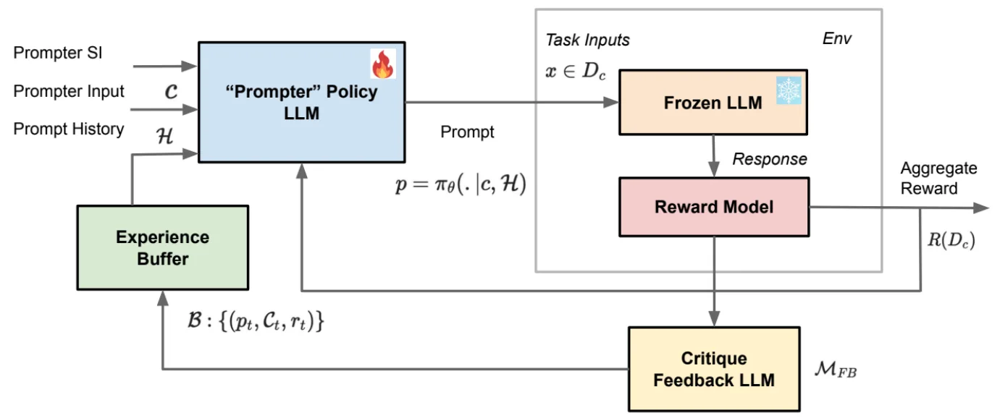
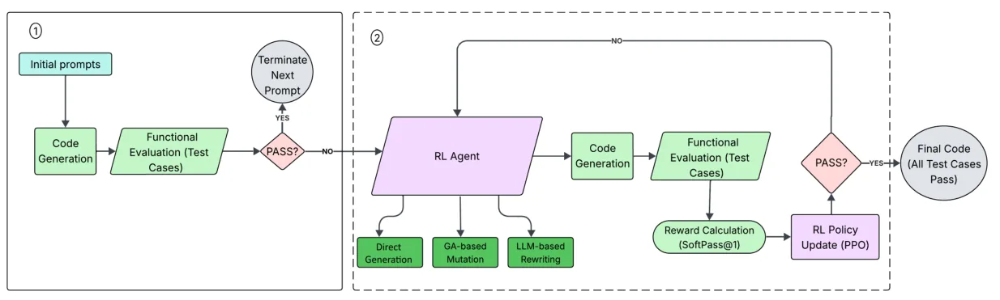
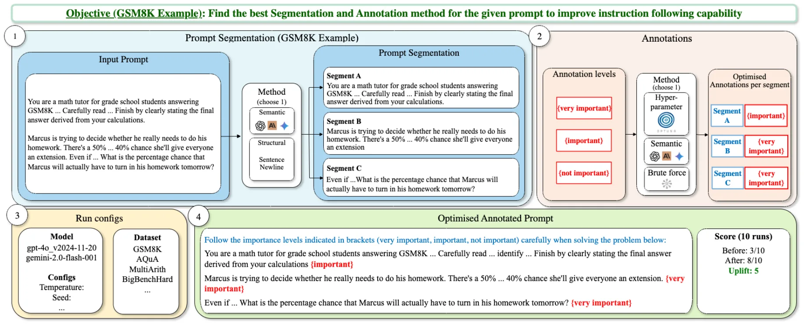
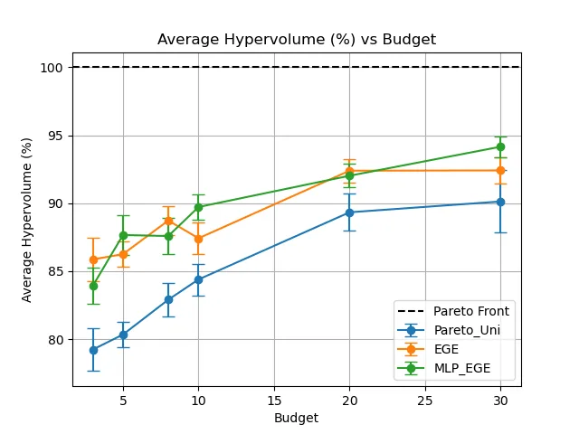
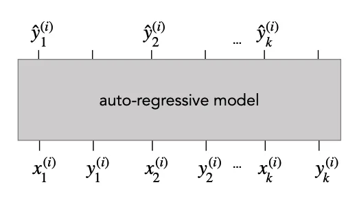
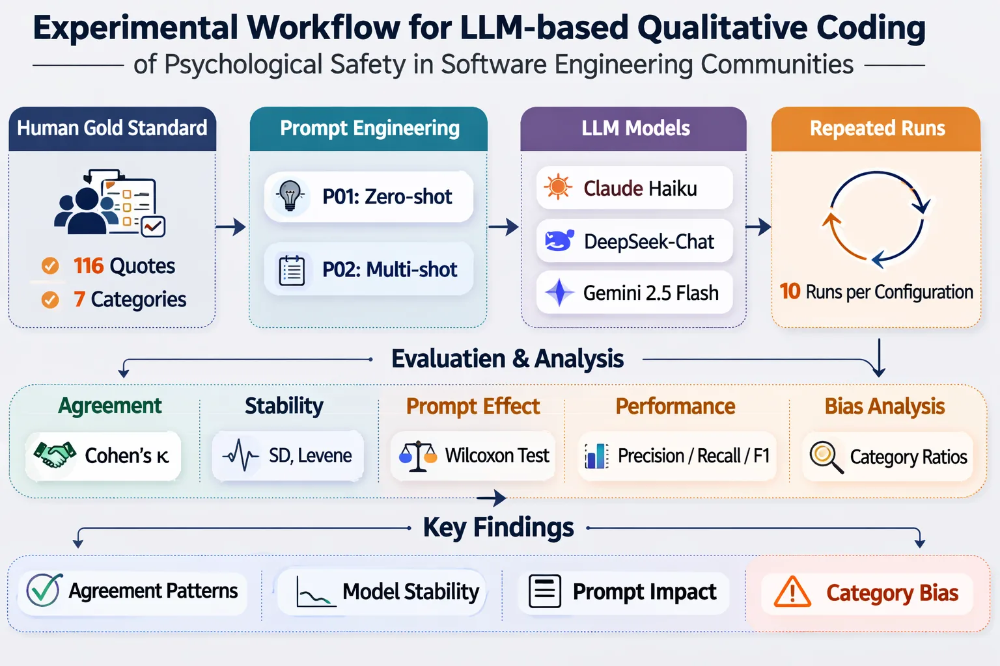
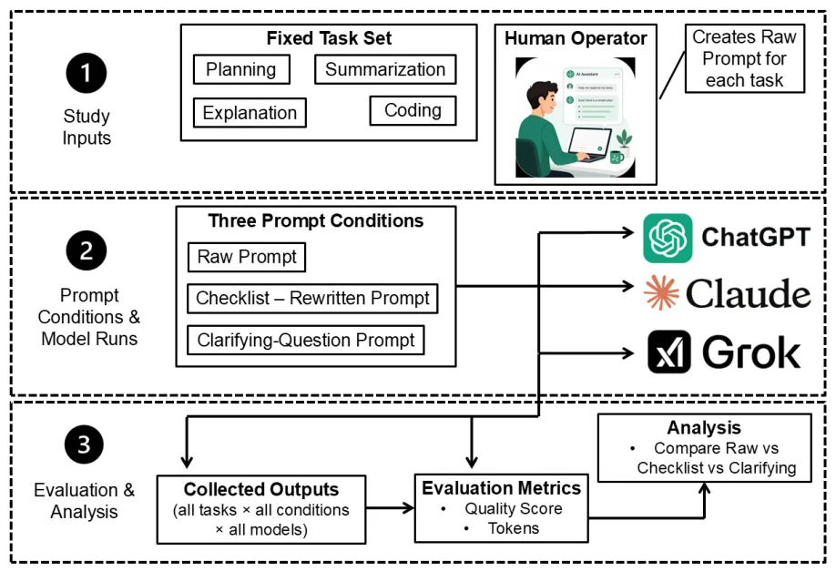

本周期筛选出的提示优化相关论文
项目日报已经做过评分与精读/速读区分，这里进一步把论文贡献压缩成展示友好的结构。
本周期筛选出的提示优化相关论文
项目已生成深度摘要与评分
集中在搜索、RL、Agent 和推理链路线
复用本地抽取图，不依赖外部网络
用于补足可靠性与部署侧视角
这批论文共同指向一个变化：提示不再只是自然语言输入，而是会被搜索、组合、评估、监控的工程资产。
把提示空间当作可搜索对象
让优化器自己诊断、试验和回滚
把推理过程显式纳入提示资产
把提示拆成可读、可复用、可迁移的组件
把提示敏感性变成可监控系统属性
这些图来自本仓库已抽取的论文图片，覆盖智能体优化、伪提示风险、RL 策略学习、码本组合与结构化标注。
把 CodeAct 的代码即行动范式用于自动提示工程，让优化器调用 evaluate、python、set_prompt、finish 等工具。
用黑盒搜索寻找与任务语义无关的伪提示，检验 LLM 是否会被无关文本系统性引导。

训练轻量级 prompter 策略模型，用标量奖励与文本批评组成经验缓冲区，蒸馏黑盒 LLM 的迭代优化经验。
把提示知识拆成离散可复用的自然语言“本能”码本，并为每个输入动态选择组合。

把代码生成提示改写建模为序列决策，用 PPO 在直接生成、遗传突变、语义重写之间选择动作。

把提示切成句子级片段，并优化“重要/非常重要/不重要”等人类可读标注来控制注意力分配。
如果要把这批论文用于团队分享，最值得强调的是方法范式变化，而不是单篇论文的指标竞赛。
质量、成本、延迟、鲁棒性、安全性开始一起进入提示选择过程，提示优化更接近真实部署问题。
SPEAR、RPT、Prompting Policies 等工作把错误诊断、实验分析、工具调用与回滚机制交给可学习或可规划的优化器。
ACIL、Context-CoT、RGoT、Thoughts-as-Planning 等论文将推理链生成、选择、规划和图结构设计纳入优化空间。
伪提示、漏洞检测提示审计、非对抗鲁棒性和训练提示选择都表明：部署前必须把提示变化纳入测试与监控。
按路线筛选，或搜索标题、思路、成果。每张卡片都链接到项目内精读页和论文 PDF。
大型语言模型生成时易出现模式坍塌，输出缺乏多样性。本研究提出QD-LLM框架，通过无梯度优化演化约32K参数的提示嵌入，在冻结的70B+模型中实现质量-多样性搜索。在HumanEval等标准测试上，覆盖率与QD分数分别提升46.4%和41.4%，显著优于基线。该方法无需微调，可增强测试边缘案例和微调数据质量，展示了演化提示嵌入连接神…

在大型语言模型应用中，提示工程至关重要，但提示性能往往涉及多个维度，仅靠单一指标优化不够全面。为填补这一空白，本文研究多目标提示选择，提出帕累托最优提示集恢复和最佳可行提示识别两种设置，并创新性地将其建模为纯探索老虎机问题。方法利用多目标老虎机高效算法，并设计了结构化老虎机下的最佳可行臂识别新算法，在线性情形下给出了理论误差界。在多…

大语言模型通过上下文学习可适应新任务，但标准方法仅提供输入输出对，缺乏中间推理步骤，难以处理复杂多步推理问题。本文提出的自动链式思维框架（ACIL）自动为示例生成推理链，筛选高质量演示以增强上下文提示。实验结果表明，ACIL在多个推理任务上显著提升了预测准确率，从而为上下文学习提供了显式推理指导的有效途径。
传统的提示优化方法通常依赖离散搜索，虽然能找到高性能提示，却无法解释为何特定修改带来提升，优化过程不透明。iPOE创新地借鉴了人类标注指南设计经验，利用自动或人工标注解释生成初始指南，再通过删除、添加、洗牌、合并等操作迭代优化，最终产出包含指南的提示，使得决策过程可解释、可追溯。在四个不同数据集的评估中，iPOE大幅优于无指南提示（…
现有自动提示优化方法大多只优化性能，忽视推理成本等多目标，且多目标优化效率低。MO-CAPO提出一种联合优化性能与成本的新算法，并通过预算分配实现成本高效的搜索。在多个任务和LLM上，MO-CAPO能发现多样、鲁棒的帕累托前沿，以更低预算获得有竞争力的性能，支持从业者按需选择性能-成本权衡的提示。
大型语言模型（LLMs）的代码生成性能对提示词高度敏感，但手动设计提示难以达到最优，现有自动优化方法考虑代码正确性不足。本文提出基于强化学习的提示优化框架，将迭代改进提示建模为序列决策，利用PPO智能体在混合动作空间（直接生成、遗传突变、语义重写）中搜索，并通过单元测试反馈塑造奖励。在MBPP+等多个基准上，该方法显著提升了三种主流…
大型语言模型在利用静态预训练知识推理上表现优异，但在需要动态从特定任务上下文中提取、内化并应用新知识的上下文学习任务中严重不足，前沿模型在CL-Bench上平均仅解决17.2%任务。本文提出Context-CoT方法，通过合成高质量推理过程来增强上下文学习能力。实验表明该方法显著提升了上下文依赖任务上的性能，证实了高质量推理合成的有…
自动提示工程（APE）通过重写提示提升下游任务表现，但现有方法将优化器视为固定流水线。SPEAR将CodeAct的代码即行动范式移植到APE，提出一个拥有评估、Python沙箱等工具的自由形式智能优化器，它可自主进行错误聚类和指标分析，配合自动回滚确保稳定提升。在三个工业级LLM评审套件的13项任务及BBH-7、GSM8K上，SPE…
大语言模型通常对任务相关提示敏感，但本文研究语义无关的“伪提示”能否引导模型。采用黑盒搜索发现此类伪提示；在多个模型和推理问答任务上，伪提示可显著提升性能，甚至优于任务感知优化提示，并能诱导模型产生重复选项、错误答案、固定数字属性等非预期行为。该发现揭示了LLM可被无关提示系统性引导的新敏感性，对安全部署有重要意义。

软件工程定性编码中，LLM的提示策略影响一致性尚不明确。本实验比较Claude Haiku、DeepSeek-Chat、Gemini 2.5 Flash的零样本与多样本提示，发现多样本仅提升Claude Haiku的κ（+0.034），所有模型均偏误（过度“分享负面反馈”，低估“表达担忧”），稳定性差异大（Gemini SD=0.0…
检索增强生成（RAG）中，大型语言模型常因缺乏推理约束而产生幻觉与错误结论，尤其影响知识密集型任务。为此，本文提出Derivation Prompting，在生成阶段基于预定义规则进行逻辑推导，从初始假设逐步构建可解释的推导树以得出答案，从而增强生成过程的可控性和透明度。在特定领域案例中，该方法相较于传统RAG与长上下文方法，显著降…
多任务大语言模型部署需同时高效适配模型权重与优化提示，但现有参数高效微调方法（如LoRA和Prefix Tuning）通常只侧重其一，限制多任务性能。PEML提出联合神经架构搜索优化连续提示与低秩适配的方案，自动化协同优化。在GLUE、SuperGLUE、MMLU等基准上，PEML平均准确率提升6.67%，单任务最高提升10.75%…
针对黑盒大语言模型的提示工程优化，提出一种基于强化学习的迭代经验蒸馏框架，通过训练轻量级提示策略模型，将标量奖励与文本反馈相结合，有效提升多步推理和工具使用任务的性能；实验表明，在逻辑密集推理任务上准确率从55%提升至90%，工具使用任务从74%提升至91%，且提示策略能自动发现算法启发式，展示出优于进化基线的样本效率和可解释性。
在生成式人工智能交互中，提示工程至关重要，但传统优化方法在无结构的提示空间中搜索，不仅计算开销大，而且容易偏离原始意图。为此，提示分割与注释优化框架从可解释性出发，将提示划分为句子级片段，并附上{不重要}、{重要}、{非常重要}等易于理解的标注，通过优化这些片段级注释来精准控制大型语言模型的注意力焦点，从而提升回应的质量。实验结果表…
系统提示优化仅能使用聚合标量分数，无法获取逐例标签或错误信息，使得传统优化难以应对离散变长文本空间。本文提出ReElicit，一种基于嵌入诱导的贝叶斯优化框架。LLM根据任务描述与历史提示-分数对，动态提炼出紧凑可解释的特征空间，并将每个提示映射为向量。高斯过程代理模型学习评分与特征向量的关系，采集函数选取目标向量，LLM再由此生成…

大型语言模型处理开放式任务时，模糊的提示常导致低质量回复和频繁交互，增加用户负担。本研究对比原始提示、检查表增强和澄清问题三种提示策略，在摘要、规划、解释、编码四种任务上测试ChatGPT、Claude和Grok，采用统一评分表评估完成度、正确性、合规性和清晰度。检查表提示获得最高平均分7.50/8，优于澄清问题（6.67）和原始（…
设计任务级提示是提升大模型性能的关键，但现有指令归纳方法常受限于所需的标注答案，获取成本高昂。Strategy-Induct框架创新地完全摒弃答案标注，仅从少量示例问题入手，先为每个问题生成推理策略，再利用（策略，问题）对归纳出通用任务指令。在多个任务和多种模型规模上的实验表明，该方法在仅有问题的设定下，性能全面超越当前最先进技术。…
大型语言模型的性能高度依赖任务提示，但现有迭代优化方法（如TextGrad）常导致提示过拟合训练分布，生成冗长提示并学习样本特定模式，导致分布外性能骤降。本研究将这种失败模式形式化为表示低效，认为容量成本膨胀与范围狭窄相互耦合加剧过拟合。为此，提出TextReg，一种基于正则化文本梯度的优化框架，包含双重证据梯度净化、语义编辑正则化…
大语言模型提示设计繁琐且敏感，现有自动优化方法难以捕获系统错误模式。Reflective Prompt Tuning (RPT) 通过LLM函数调用模拟人类提示工程师迭代流程，利用诊断函数评估目标模型、总结失败模式并生成结构化报告，驱动提示修订。在三个推理任务上，RPT较初始提示提升高达12.9点，并与最先进方法竞争，同时改善置信校…
大型语言模型（LLM）的思维图（GoT）提示方法通过构建操作图来引导复杂推理，但其操作图依赖人工针对特定问题预先设计，导致静态僵化、难以适应多变任务。针对该问题，提出强化思维图（RGoT），利用强化学习技术从预定义操作空间中自动学习生成适应任务复杂度的动态操作图，实现端到端的自适应提示构造。实验结果表明，在给定操作集和任务约束下，R…
自动提示优化方法虽能提升大语言模型性能，但跨任务泛化能力不足，跨模型骨干亦然。本研究采用因果启发的观察分析，研究不同优化框架与任务上的提示编辑模式。发现复杂度增加及元指令编辑损害数学与多跳推理，逐步与元认知编辑则有助逻辑与顺序推理，且效果跨特征稳健。这些发现揭示了失败源于编辑家族与任务特性的系统交互，为任务条件优化器设计提供依据。
软提示调优通过优化连续向量嵌入适配下游任务，虽参数高效却牺牲了可解释性，用户难以解读其内涵。受最近解释软提示的进展启发，本文训练一个从软提示到硬提示（自然语言）的专用翻译模型，以期获得高保真翻译。在多个Dataset of Datasets上，定量比较和人工评估一致表明，该翻译器产生的文本提示流畅通顺、语义准确，大幅优于现有的免训练…
现有自动提示优化方法常将任务提示视为整体进行全局编辑，导致更新脆弱且无法复用学习到的子行为，同时忽略实例差异。为此，本文提出Prompt Codebooks（PCO），一种组合式提示优化框架，将提示构建知识组织为离散、可重用的自然语言“本能”条目集合，通过编码器-生成器-评判器框架为每输入动态选择和组合本能，以文本梯度进行端到端训练…
大语言模型在文本分类中面临监督微调缺乏透明推理与离散提示优化性能差的双重挑战。为此提出eXTC，通过结构化提示优化学习自然语言SOP规则手册，经蒸馏与强化学习赋予紧凑模型推理能力并扩展推理范围。实验结果显示，eXTC在多个基准上分类准确率和解释质量显著优于现有方法，同时提供局部推理轨迹和全局模块化解释，实现了性能与可解释性的平衡。
推理链优化对LLM任务对齐至关重要，但现有黑箱方法样本效率低、泛化性差且不透明。我们提出Thoughts-as-Planning框架，将其建模为潜在语义空间中序贯决策，通过世界模型与邻近嵌入实现多尺度规划编辑。实验表明，该方法在多项任务上超越SOTA，提升效率、鲁棒性与泛化性，并提供可解释的规划轨迹。为推理链优化提供统一可解释的规划…
企业LLM对话代理面临提示正确性和行为漂移双重挑战，传统一次性优化难以应对。PRISM框架将提示工程视为持续可靠性问题，通过迭代仿真自动生成测试、诊断并修复缺陷，调度运行以监控漂移。评估显示，提示编写时间从2天降至不足30分钟，可靠性达99%，并在24小时内修复生产回归。该工作为大规模企业对话AI提供了必要的持续优化范式。
大型语言模型在漏洞检测中的应用日益普及，然而不同提示表述下的可靠性尚未得到系统研究。为此，PromptAudit框架通过控制数据集、解码方式等变量，仅改变提示策略，在涵盖16种语言6074个代码样本的1000个CVE漏洞上对5种开源LLM进行评估。评估指标包括准确率、召回率、弃权率等，发现标准思维链提示综合表现最优，少样本对提示敏感…
训练提示在微调中常被视作静态表面形式，但本研究发现不同语义等价提示会引发截然不同的灾难性遗忘与泛化表现，且存在跨任务一致的优越提示。为此，提出状态自适应提示优化SAPO，利用任务损失动态调整训练提示。实验表明SAPO显著缓解遗忘、增强泛化，性能优于现有方法，为鲁棒微调提供有效策略并揭示提示对学习动态的关键影响。
视觉语言模型如CLIP通过连续提示学习适配下游任务时，常面临过拟合且可解释性不足的挑战；离散提示优化虽能改善可解释性，却依赖庞大外部模型，导致计算开销大、难扩展。为此，本文提出可解释提示学习框架IPL，采用交替优化策略，将离散语义令牌选择建模为近似子模优化问题，鼓励选择人类可理解且语义多样化的令牌，并与连续提示优化协同训练。在多个基…
大型语言模型(LLMs)的广泛应用引发对其生成有害内容的担忧。本文首先评估四种通用LLM的有害性，随后提出SafeTune，一种多目标搜索方法，通过超参数调优与系统提示工程协同优化安全性与回复相关性。在Qwen3.5 0.8B上的实验结果显示，有害响应率大幅降低，提示-回复相关性显著提升，效应量较大。值得注意的是，鼓励生成重复性是减…